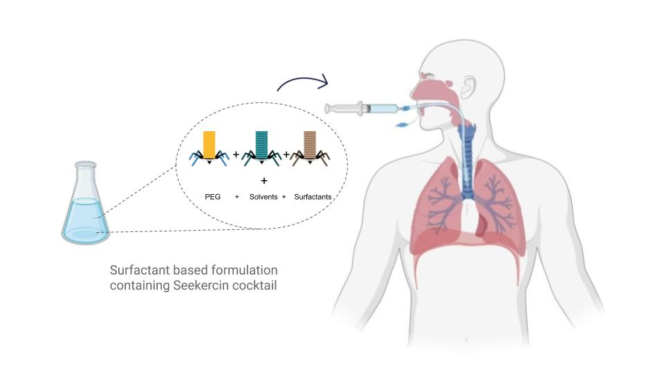
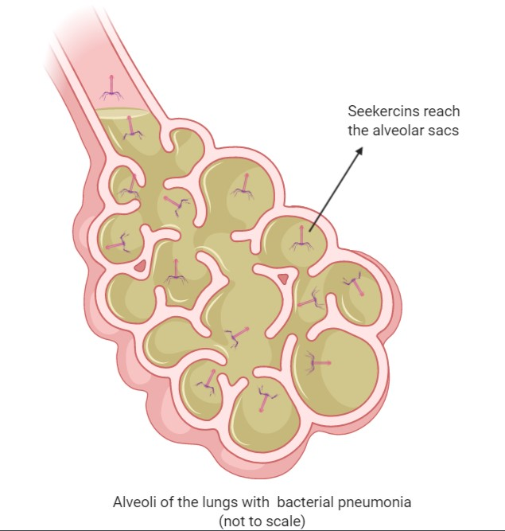
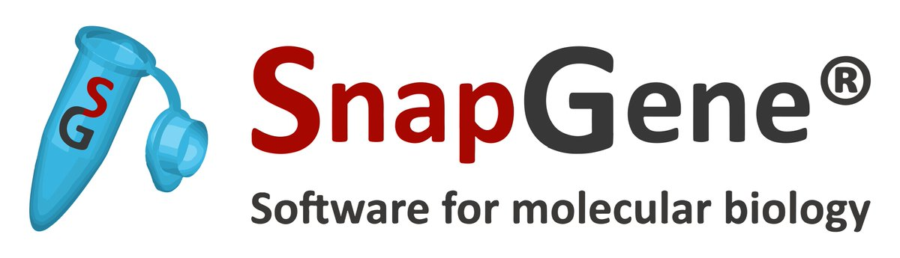
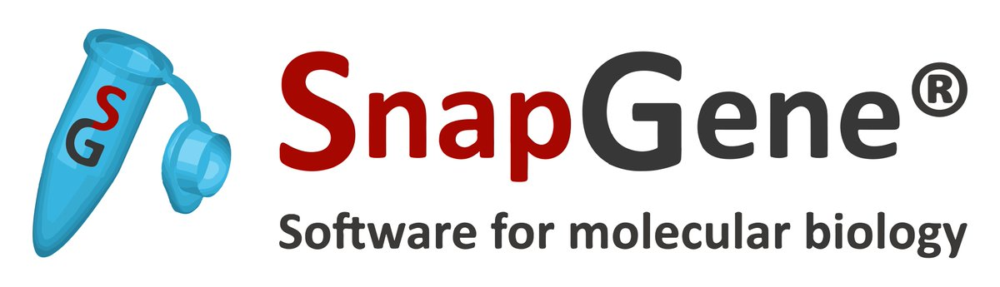

We suggest a surfactant-based formulation containing a mixture
of fusion proteins to be used for endotracheal and endobronchial
administration for the treatment of Ventilator-related pneumonia
(VAP) is associated with increased stay and mortality in the
intensive care unit ( ICU) with an estimated 30 % rise in
underlying disease mortality.
Current strategy is the only way to deal with acquired
infections is to monitor the spread of infections by
administering antibiotics. Once the disorder is diagnosed,
subsequent antibiotics are administered to the sites of
infections, i.e. alveoli and trachea lining, and we have
findings for the infection microbial profiles.
We plan to use a surfactant to improve the delivery of the
medication and achieve a more homogeneous distribution of the
drug by using the rapid installation of the bolus in conjunction
with suitable alveolar recruitment techniques. It will require
the administration of a carefully formulated formulation
according to each infection's microbial diagnosis. By having a
unique seekercin for various organisms, we aim to keep our
therapy specific and targeted, thereby preventing any collateral
damage and reducing the spectrum of production of resistance.

Surfactant consists of 80-85 % phospholipids, 5-10 % neutral
lipids, and 8-10 % protein, with 5-6 % of the four specific
proteins of surfactant. Broadly, the formulation has the
following structure:
|
Mucolytics: Carbocisteine, Erdosteine.
|
Bronchodilators:Beta-2 agonists,
Anticholinergics, Theophylline
|
| Seekercin A |
di-Palmitoylphosphatidylcholine (DPPC) |
| Seekercin B |
Phosphatidylglycerol |
| Seekercin C |
Phosphatidylinositol |
By instilling a particular microvolume of liquid into the upper
airways and moving the plug by programmed air ventilation into
the desired region of the lung, the aqueous liquid containing
soluble drugs can be delivered into targeted branches of the
lung airway and deposited onto the lung epithelium .

We researched and decided on delivery of pyocins through
nebulizers however, in India there is a disproportionately large
problem with VAPs in the Newborn Intensive Care Units.
(NICU) (60k+ deaths per year).
On seeking an expert opinion from a Doctor (NICU/VAP
specialist), he pointed out that neonates, especially preterm,
have underdeveloped lungs that are too delicate for effective
nebulizer based treatment.
A big drawback of nebulizer therapy is its poor efficiency of
delivery, much of the dose is lost in the ETT (mist deposition
on the walls, medicine does not get misty well, etc.). Drug loss
is no longer a concern when administering the bolus dose, since
the substance itself is injected into the lungs, taking the drug
with it.
As observed in in-vivo studies, our rapid and efficient delivery
of bolus-injected surfactant solutions containing
surfactant-associated proteins such as SP-A to the alveoli shows
a strong precedent for delivery of Seekercin is also more likely
to ensure the delivery of high doses (10 ^ 12 pyocins per ml)
needed for successful treatment. The dose will easily enter the
alveoli, and it is predicted that changes will be observed
within seconds to minutes.


 
